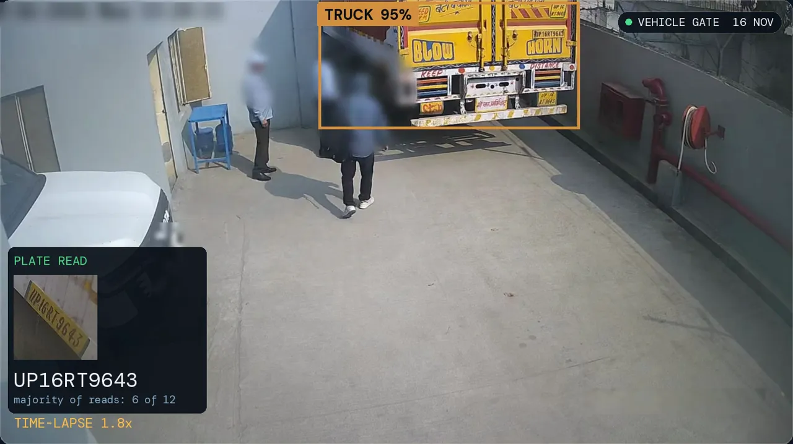
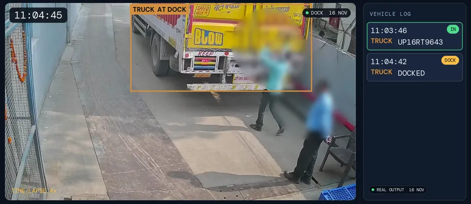
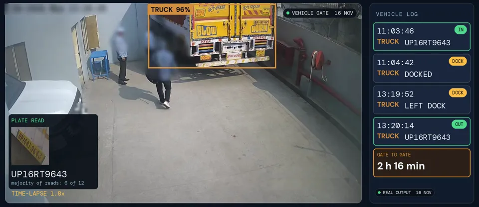
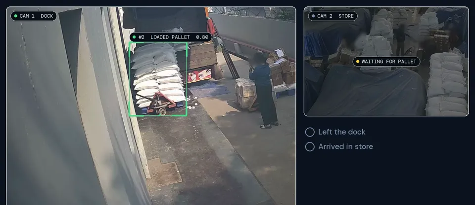
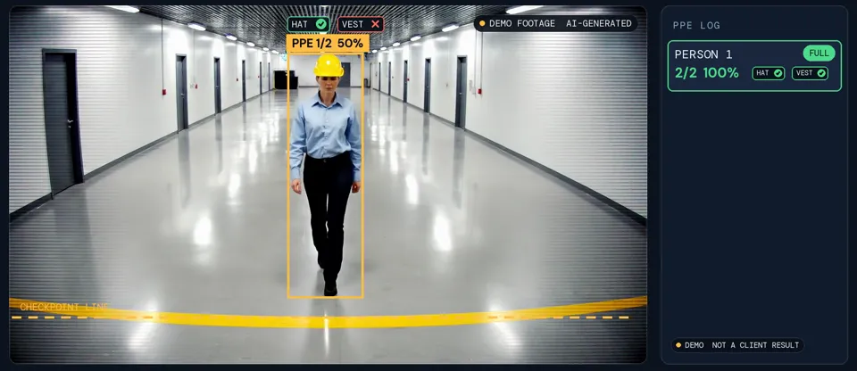
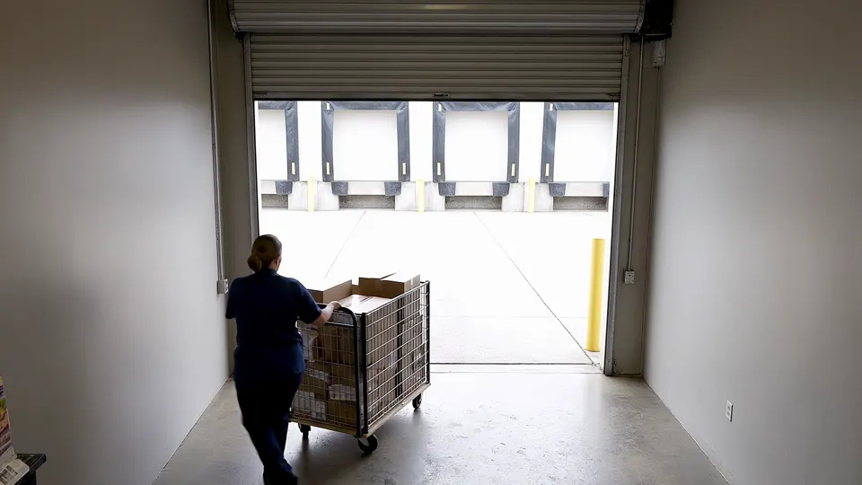
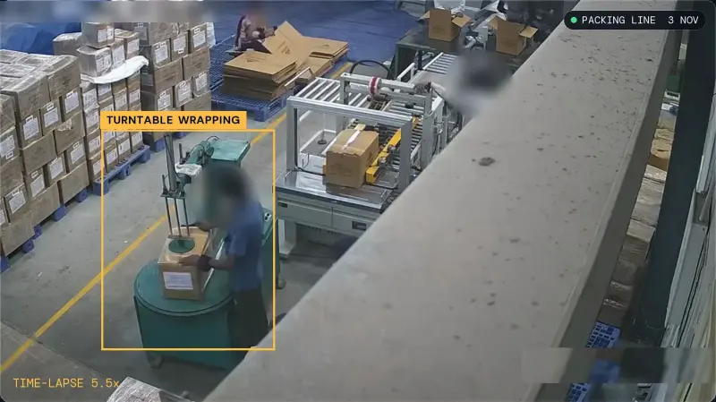

Vehicle gate
The truck is read by number plate and stamped with the time. A car is logged as a car.
Where it shows up: factory gates, quarries, construction sites, ports, cold stores, campuses.

Cameras that count and check
A camera at a gate, a dock, a line or a door becomes a count or a check that a person audits, with the clip behind every row.
Dated proofOn 18 and 19 November 2026, a packing line was counted by camera at 141 cartons and by a person at 141, over 38 sampled windows on two days the system had never seen.
Healthfields, an ongoing deployment. Development-stage results, updated as we go.
Checkpoints
Pick the place. We build the count or the check for it, from your own footage. The examples below are different checkpoints, not different products.
The truck is read by number plate and stamped with the time. A car is logged as a car.
Where it shows up: factory gates, quarries, construction sites, ports, cold stores, campuses.

When a truck docks and when it leaves the dock, with the time of each.
Where it shows up: any site with loading bays.

One visit from the plate read on the way in to the plate read on the way out. In the clip: about 2 hours 16 minutes.

Each person who crosses is detected and logged with the time.
Where it shows up: entrances, restricted areas, shift changes.

A loaded pallet followed from the dock to the store.
Where it shows up: factories, warehouses, cold stores, any place goods change rooms.

A running count of cartons at the packing line.
Where it shows up: any line where finished goods leave one point.

Cartons counted live as they are loaded onto the truck.

The same checkpoint can apply a rule: full gear passes, a missing item is flagged.
Illustration / demo, not a client result.
See every checkpoint with its example →
Real footage is from Healthfields, with faces blurred. The protective-gear clip is a generated demonstration.
Other kinds of site
These five pictures are generated illustrations, not customers. They show where the same gate, door and line checkpoints exist.



How it works
Send a few minutes of footage from one camera, or tell us what you want counted or checked.
We pick about 40 images from your own footage and label them ourselves. There is no labelling project on your side.
Counting and review happen on a computer on your site, with no internet needed. Every row is kept with its clip.
A person counts a random sample and compares it with the camera. Misses feed the next version, and a person approves every change.
Video
Real Healthfields footage and one labelled demonstration. Captions are on the picture.
Every count, with its clip
Counts are never added into one total. Each is kept by checkpoint, by door, by in or out, by item and by truck. Click a row and you see the clip it came from.
A real log row from the Healthfields gate. Every row works this way.
Why VisorVolt

Proof
Healthfields, 12 October 2026. The camera counted 102 cartons loaded at the dock. A person counting each carton counted 103.
Read the case study →
Healthfields, 18 and 19 November 2026. The camera counted 141 cartons over 38 sampled windows. A person counted 141. 23 of the 38 windows matched exactly.
Packing line: 141 counted by camera v 141 by a person over 38 sampled windows on two unseen days. 95% range about 7% either way.
Forty labelled images reach a median of about 89% of a fully hand-labelled model, across 39 public datasets.
How we tested it →Healthfields is an ongoing deployment. These are development-stage results, not final figures.
Research
We built a model from 40 images on each of 39 public datasets we did not choose. The pass mark was set before we ran: under 55% of a fully labelled model counts as a failure. Zero of 39 hit it, with no per-domain tuning. The median was 89% of a fully hand-labelled model. For each site we pick the 40, so you do not run a labelling project.
On frames with none of the target objects, the single 40-image model made 11.5 false detections per 100 frames, against 104.8 for the three separate single-object models it replaces, roughly 9 times fewer.
Of a fully hand-labelled model, from 40 images.
None of them chosen by us.
The 55% pass mark was set before the run.
Public benchmark results. They show the method works across many kinds of image; they are not customer results.
Partners
Prolifics: a global systems integrator with 2,000+ experts, 150+ Fortune 1000 clients, 47+ years and 10 locations. Delivers VisorVolt to its clients in every industry.
Prolifics and VisorVolt →Zebra Technologies Registered ISV, North America and Asia-Pacific.
VisorVolt and Zebra →Send a few minutes of footage from one camera, or tell us what you want counted or checked. We will tell you what to expect before you buy.